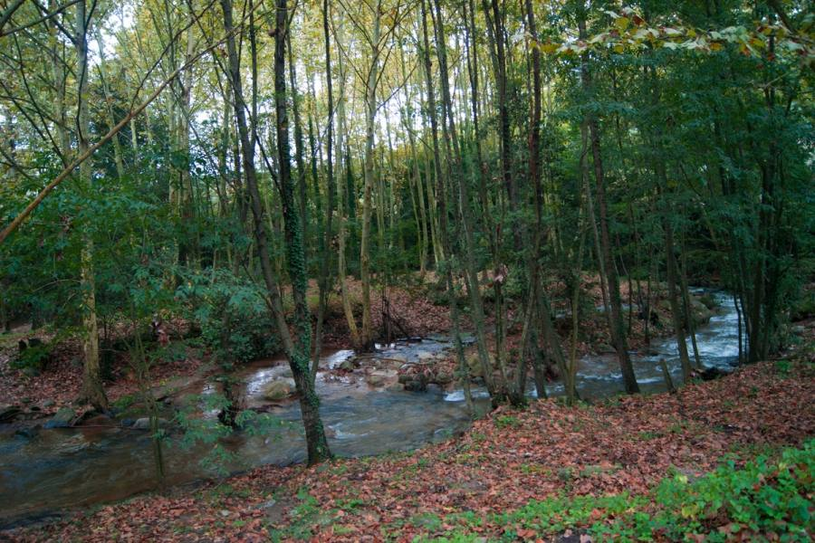

Ruta · Gualba
Aquesta ruta ens porta a descobrir l'entorn més proper del poble de Gualba , ben bé als peus de l'imponent massís del Montseny . Aquestes muntanyes ens regalen aigua en abundància , element que no…